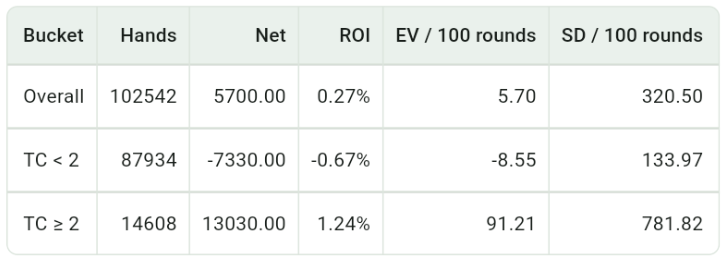

High Card Principle
When the high-card ratio rises, the player gains structural advantages in blackjack, doubles, insurance, and dealer bust rate.
- Blackjack pays 3:2, so more 10s and aces increase the player's chance of getting blackjack.
- Doubles on 9, 10, and 11 benefit from hitting high cards, and doubling amplifies the edge.
- The dealer must hit 12-16, and more high cards increase the chance of drawing a 10 and busting.
- Insurance is essentially a bet on whether the next card is a 10-value card, so it only becomes positive EV when 10 density is high enough.
This is why systems like Hi-Lo count low cards as +1 and high cards as -1: after low cards are removed, the remaining shoe has a higher high-card density, which is better for the player.
App Simulation Stats
The result below comes from an app simulation using Hi-Lo with a bet ramp, grouping true count, bet sizing, EV, and volatility for comparison.

Hi-Lo + Bet Ramp simulation result
This simulation uses Hi-Lo counting with a bet ramp, runs 100,000 rounds, and sets the threshold at TC = 2. When the true count reaches the higher range, TC > 2, the overall expected value is clearly higher than the TC ≤ 2 range.
This shows that when the proportion of high cards rises, the player's edge becomes more concentrated. The point of a bet ramp is to raise bets in those higher-TC spots where the deck is more favorable. In other words, using a counting edge is not only about knowing the deck has improved; it is about increasing bet size when TC is high.
However, high-TC zones have higher EV and also much higher standard deviation. More high cards are favorable, but short-term swings are more intense, so bankroll and risk control still matter.